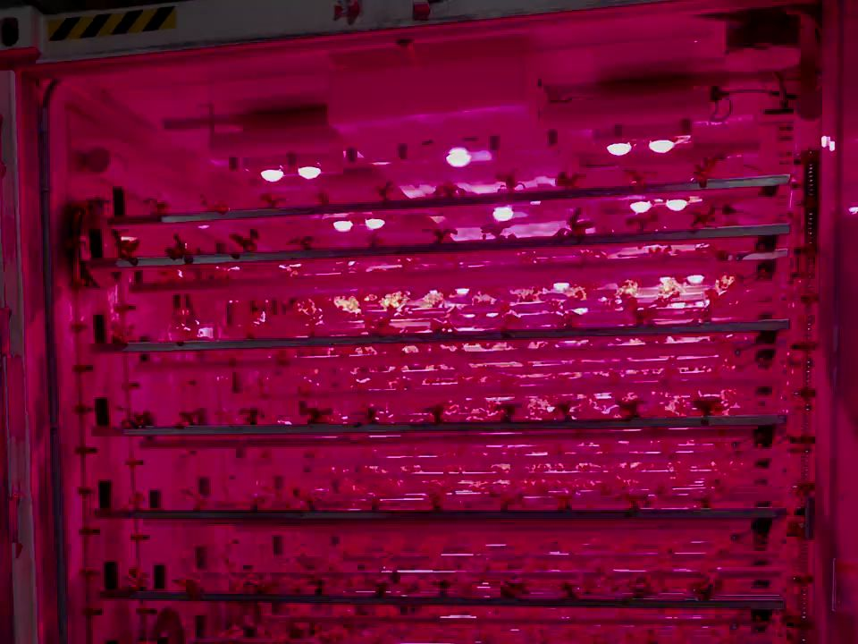

Invest with conviction.
Take positions in selected companies where we see a compelling opportunity and a meaningful role for our involvement.
Principal investmentInvestment & strategic advisory
Capital, strategic perspective and hands-on corporate development for companies moving into their next stage.
An investor’s conviction.
A working partner’s commitment.
Based in Dubai & Mexico City
Investment · Strategy · Corporate development
01 / How we work
Polanco Ventures is an investment corporation with capital markets and strategy advisory capabilities. We invest selectively and work alongside leadership teams on the decisions, relationships and execution that move a company forward.
Take positions in selected companies where we see a compelling opportunity and a meaningful role for our involvement.
Principal investmentConnect business strategy, capital requirements and corporate development around a clear set of priorities.
Strategic advisoryFor selected engagements, take a direct corporate development and strategy role, with responsibilities defined around the company’s needs.
Direct roles, case by case02 / Selected companies
Our current portfolio spans energy, food systems and circular materials. Each company has its own ambitions. Our involvement reflects the work ahead.
Advancing natural gas resources toward commercial development.
Polanco’s involvement
Investor, with capital markets positioning and strategic introductions.
Robinson is developing natural gas discoveries in Papua New Guinea, with a longer-term pathway toward LNG export. Polanco’s focus is the company’s capital markets narrative and relevant strategic relationships.
Trading began on the TSX Venture Exchange on June 22, 2026.
Read issuer announcement
Food systemsFresh produce through controlled-environment agriculture.
Polanco’s involvement
Investor, with a direct senior corporate development role.
Publicly presented as SkyFarms, the business combines controlled-environment growing with distribution. Its product range includes lettuce, basil, arugula and microgreens.
Our involvement spans strategy and corporate development, working alongside the company on its next stage.
Explore the product rangeTurning polyester waste into useful industrial inputs.
Polanco’s involvement
Investor, with a direct senior corporate development role.
Denovia is developing a depolymerisation process for polyester waste, including textiles and PET. The company reports pilot operations in Vancouver, Canada.
Our involvement spans strategy and corporate development as the business advances toward commercialisation.
Explore the technologyCompany developments are presented as company milestones, not as investment returns or outcomes attributable solely to Polanco.
03 / Where we contribute
A financing, a strategic partnership or a new phase of growth starts with the same question: what does the business need to be ready?
Define the next stage, evaluate strategic options and coordinate the work across leadership, shareholders and external partners.
Connect capital needs to the company’s operating plan and prepare a clear, supportable investment narrative.
Help leadership explain the business, its milestones and its next stage to capital markets audiences.
Identify relevant counterparties and prepare the company for purposeful conversations, with context and clear objectives.
04 / Our perspective
Based in Dubai and Mexico City, with a perspective spanning the Gulf, Canada, the United States and Latin America. We look at each company in the context of the markets, capital and relationships relevant to its next stage.
Gulf perspective
Latin American perspective
Canada & the United States
For companies, investors and specialist partners with a reason to work together.
Explore a partnership05 / Working together
Tell us what you are building, where the company stands and the decision or opportunity ahead.
Explore where Polanco can contribute, whether through investment, advisory work or a direct role.
Agree the scope, responsibilities and measures of progress before moving into execution.
Investment and advisory involvement are considered case by case. Neither is a requirement or a promise of the other. The role follows the opportunity and the agreed mandate.
Yes. For selected companies, Polanco takes a direct corporate development and strategy role. Responsibilities and the level of involvement are defined for the engagement.
Share your focus, relevant experience and the kind of relationship you want to explore. We can then assess where there may be a fit. An introduction does not imply access to an investment offering.
06 / Start a conversation
A company at a turning point.
A strategic opportunity.
A relationship worth exploring.
Your introduction
Send this to contact@polancoventures.com.
Nothing has been sent. If an email app does not open, copy the introduction into your preferred email service.